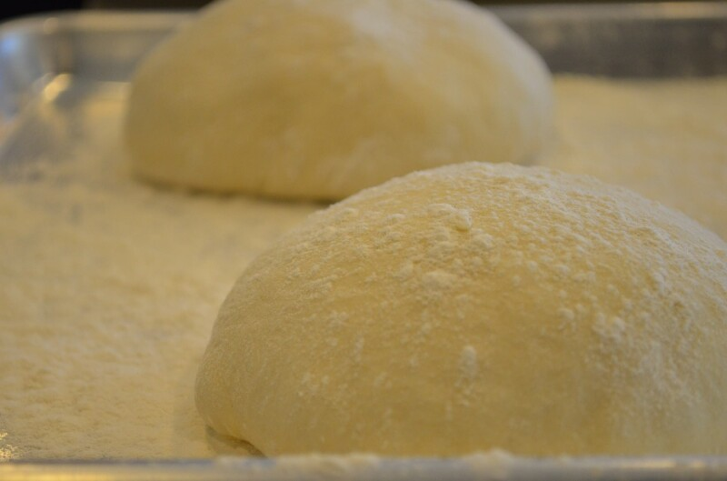
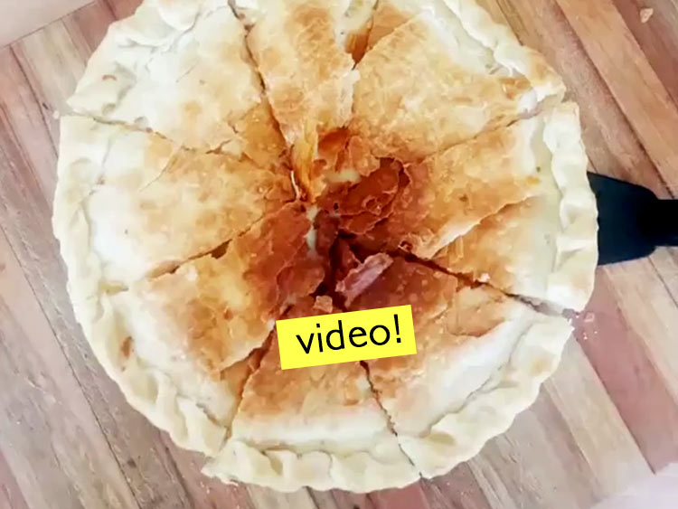
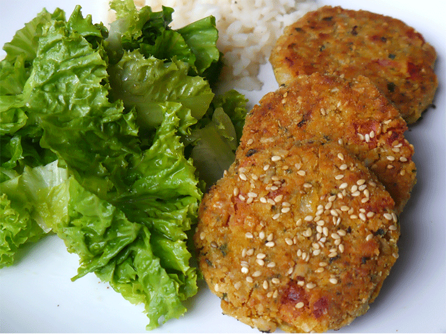

Recetas saladas:
Prepizza
Bollos de masa

Ingredientes:
| Cantidad | Ingredientes |
|---|---|
| 1kg | de harina |
| 10grs | de levadura fresca |
| 750cc3 | de agua tibia |
| 1 cucharada | de sal |
| 1 cucharadita | de azucar |
| 1 pocillo | de aceite |
Pasos a seguir:
- Hidratar la levadura en 200cc de agua tibia.
- Poner en un bowl el harina, hacer un huequito en el medio y agregar el azucar y el aceite. La sal va por fuera de la corona de harina que formamos.
- Agregar la levadura ya disuelta en el centro.
- Agregar el resto del agua tibia mientras se va uniendo todo. Amasar.
- Cuando esta armado el bollo, tapar y dejar leudar hasta que duplique su tamano
- Luego armar 6 bollitos, estirar en las fuentes e ir cocinando aprox 7min c/u. Horno precalentado a 200 grados
Tarta Rica
Tarta rica

Ingredientes:
| Cantidad | Ingredientes |
|---|---|
| 1 | Tapa de tarta |
| Tomate | |
| Cebolla cortada | |
| 2 | Huevos duros |
| 100grs | de Jamon cocido |
| de Muzarella | |
| A gusto: | oregano |
Pasos a seguir:
- Hervir los huevos.
- Cortar la cebolla y el tomate en rodajitas y la muzzarella en pedacitos.
- Estiramos la masa y vamos colocando en capas:
- Cebolla
- Queso
- Huevo duro rayado
- Oregano
- Jamon
- Cocinar en el horno precalentado a 200grados.
Milanesas de zapallo
Milanesas de Zapallo

Ingredientes:
| Cantidad | Ingredientes |
|---|---|
| 1 | Zapallo |
| 2 | Huevos |
| A gusto: | Sal |
| Pimienta | |
| Oregano | |
| 2 tazas | Rebozador/Polenta |
Pasos a seguir:
- Batir los huevos y agregar los condimentos.
- Cortar el zapallo en rodajas medianas y pasar por huevo.
- Luego pasar las rodajas por rebozador, polenta o una mezcla de ambas!
- Cocinar en el horno aprox a 200 grados por 15min (dar vuelta a los 9/10min)